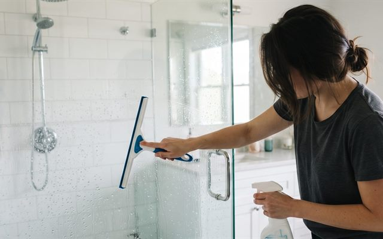
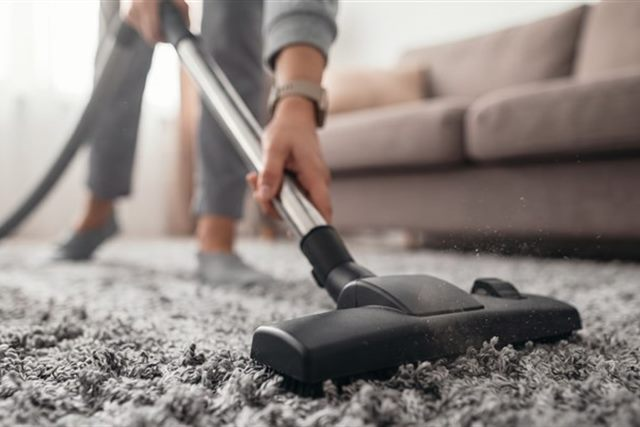
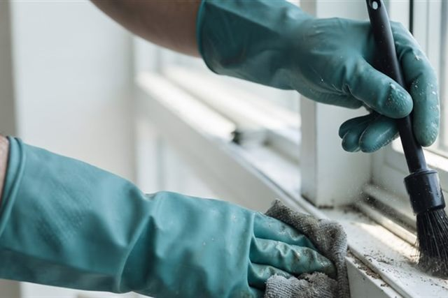
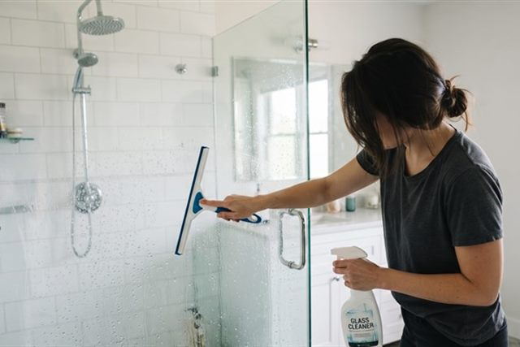

도장은 한 번 상하면
되돌리기 어렵습니다.
그래서 저희는 진단부터 서두르지 않습니다.
다름카케어는 흔한 물때와 잔기스부터 도장이 얇아진 자리, 코팅이 벗겨진 곳처럼 놓치면 안 되는 곳까지 함께 봅니다. 도막 두께와 흠집 상태를 직접 보여드리며 설명하고, 지금 손봐야 하는지 · 다음에 해도 되는지를 분명하게 말씀드립니다.
도막 두께와 흠집 깊이를 먼저 재고, 그 결과를 보고 작업 단계를 정합니다.
지금 해야 할 것과 나중에 해도 되는 것을 나눠서 있는 그대로 안내합니다.
진단부터 마무리까지 같은 사람이 맡아 차 상태의 변화를 놓치지 않습니다.
판금이나 도색이 필요하면 함께 일하는 공업사로 바로 연결해 드립니다.
시공 분야
새 차부터 오래 탄 차까지, 상태에 맞게 보고 골라 시공합니다.
-

틴팅
열차단 · 시야앞유리 · 측면 · 후면. 붙이기 전에 필름을 직접 보여 드리고 투과율을 함께 정합니다.
-

광택 · 코팅
도장 되살리기잔기스를 단계별 광택으로 걷어내고, 유리막 코팅으로 그 상태를 오래 지킵니다.
-

실내외 클리닝
묵은 때 · 냄새시트와 천장, 송풍구까지 분해해 닦습니다. 냄새의 원인부터 찾아 없앱니다.
실제로 마무리한 작업들입니다.
차주를 특정할 수 있는 내용은 모두 지우고 작업과 결과만 남겼습니다. 같은 작업이라도 차 상태에 따라 결과는 달라집니다.
앞유리 열차단 필름, 시야를 줄이지 않고
밤 운전이 잦아 어두운 필름을 꺼리시던 차주의 차입니다. 투과율을 함께 재어 보고 밝으면서 열만 막는 필름으로 골랐습니다.
세차로 지워지지 않던 잔기스 정리
자동 세차를 오래 다닌 차라 표면에 잔기스가 촘촘했습니다. 도막을 재고 남은 두께 안에서 세 단계로 나눠 걷어냈습니다.
원인 모를 냄새, 송풍구에서 찾음
방향제를 여러 개 놓아도 냄새가 남던 차입니다. 에어컨 계통을 열어 보니 곰팡이가 있어 그 부분만 다뤘습니다.
출고 당일 받은 신차 패키지
출고장에서 바로 넘겨받아 그날 안에 마쳤습니다. 틴팅과 코팅, 하부 방청까지 한 번에 진행했습니다.
비 맞고 굳은 물때 자국 제거
야외 주차라 유리와 도장에 물때가 굳어 있던 차입니다. 유리는 따로 연마하고 도장은 한 단계만 가볍게 다뤘습니다.
오래된 필름을 걷어내고 다시
십 년 넘은 필름이 보라색으로 변하고 기포가 올라온 차입니다. 유리를 상하지 않게 천천히 걷어낸 뒤 새로 붙였습니다.
아이가 흘린 자국까지 되돌리기
시트와 매트에 오래된 자국이 여러 곳 남아 있던 차입니다. 소재별로 약을 나눠 쓰고 남은 물기는 완전히 말린 뒤 넘겨 드렸습니다.
인수 전에 미리 잡아 둔 일정
출고일이 정해진 뒤 미리 연락 주셔서 자리를 비워 두었습니다. 필름과 코팅제를 먼저 골라 두어 당일에 바로 시작했습니다.
해당 작업의 사례가 아직 없습니다.
위 내용은 이해를 돕기 위해 정리한 예시이며, 차 상태에 따라 결과는 달라집니다.
작업 사례 더보기이 여섯 가지는 바꾸지 않습니다.
일이 몰리는 철에도, 급하다고 재촉하셔도 아래 여섯 가지는 그대로 둡니다.
결과가 흔들리는 건 대부분 이 중 하나를 놓쳤을 때였습니다.
-
도막 측정 먼저
남은 도장 두께를 재기 전에는 광택을 시작하지 않습니다.
-
정품 필름 · 코팅제
제조사 정품만 씁니다. 시공 전에 제품과 보증서를 보여 드립니다.
-
실내 작업장
먼지가 앉지 않도록 문을 닫은 실내에서만 작업합니다.
-
가리는 작업 없음
흠집을 덮어 잠깐 가려 두는 약제는 쓰지 않습니다.
-
손으로 마무리
기계가 닿지 않는 모서리와 틈은 손으로 마무리합니다.
-
하루 두 대까지
받는 차를 하루 두 대로 제한합니다. 서두르지 않기 위해서입니다.
직영 실내 작업장에서 진단부터 마무리까지 외주 없이 직접 합니다.
작업 과정 보기시공 절차와 비용
무엇이 기본이고 무엇이 추가인지 먼저 알려드립니다. 작업 중에 갑자기 늘어나는 비용을 만들지 않습니다.
-
견적 신청
견적 요청 폼이나 전화로 차종 · 연식 · 원하시는 작업만 남겨주세요.
-
입고 · 진단
차를 직접 보고 도막을 재어 필요한 단계와 총액을 확정합니다.
-
실내 작업장 시공
먼지가 앉지 않도록 문을 닫고 작업합니다. 단계마다 사진을 보내 드립니다.
-
확인 · 인계
햇빛 아래에서 함께 확인하고, 관리하는 법을 알려 드린 뒤 넘겨 드립니다.
-
입고 전 기본 세차
작업 전에 필요한 세차는 저희가 합니다. 세차비를 따로 받지 않습니다.
-
주변부 보양 작업
고무 몰딩과 헤드램프, 엠블럼처럼 약해지기 쉬운 곳을 가린 뒤 시작합니다.
-
작업 전후 사진
같은 자리에서 같은 조명으로 찍어 드립니다. 도막 수치도 함께 남겨 드립니다.
-
관리 방법 안내
코팅을 오래 유지하는 세차 방법과 피해야 할 것을 알려 드립니다.
※ 기본 범위를 넘는 작업은 아래 '추가 비용 항목'으로 안내드리며, 작업 전에 반드시 먼저 알려드립니다.
※ 추가 항목은 진단 단계에서 필요 여부를 먼저 확인하고, 금액을 안내드린 뒤 동의를 받아 진행합니다.
| 작업 구분 | 차종 · 작업 범위 | 기본 비용 (VAT 별도) |
|---|---|---|
| 틴팅 (측면 · 후면) | 준중형 기준 | 250,000원~ |
| 틴팅 (전면 포함) | 준중형 기준 | 400,000원~ |
| 1단계 광택 | 잔기스 위주 | 300,000원~ |
| 광택 + 유리막 코팅 | 3단계 · 이틀 | 700,000원~ |
| 실내 클리닝 | 시트 · 천장 · 송풍 계통 | 200,000원~ |
| 신차 패키지 | 차종 확인 후 산정 | 별도 문의 |
※ 위 금액은 준중형 기준의 예시입니다. 대형차 · 수입차 · 특수 도장은 금액이 오를 수 있습니다.
※ 도장 상태와 흠집 깊이, 이전 시공 이력에 따라 금액이 달라집니다. 입고 진단은 무료입니다.
-
2주 전 · 날짜 잡기
하루 두 대만 받기 때문에 원하시는 날짜는 미리 잡아 두시는 편이 좋습니다.
-
1주 전 · 이전 시공 확인
광택이나 도색, 코팅을 하신 적이 있으면 알려 주세요. 작업 방법이 달라집니다.
-
전날 · 귀중품과 서류 빼기
차 안의 귀중품과 서류는 미리 빼 주세요. 실내 작업 때 안전합니다.
-
당일 · 연료와 열쇠
연료를 넉넉히 채워 오시고, 스마트키는 하나만 맡겨 주시면 됩니다.
※ 코팅은 마른 뒤 굳는 시간이 필요합니다. 인계 후 하루 이틀은 비를 피하고 세차를 미뤄 주세요.
맡겨 보신 분들의 이야기
차를 맡기신 분들이 남긴 말을 그대로 옮겼습니다.
자주 묻는 질문 맡기시기 전에 자주 물어보시는 여덟 가지
상담 전화에서 가장 많이 받는 질문만 골라 짧게 답했습니다. 여기 없는 내용은 전화나 카카오톡으로 편하게 물어보세요. 작업 중에는 전화를 받지 못할 수 있으니 폼으로 남겨 주시면 확인 후 연락드립니다.
몰라도 괜찮습니다. 먼저 차를 보고 도막을 재는 데 20분쯤 씁니다. 상태와 불편한 곳, 타시는 환경을 듣고 그날 할 작업을 정해 드립니다. 진단만 받고 돌아가셔도 됩니다.
하루 두 대만 받기 때문에 예약제로 운영됩니다. 당일 빈 자리가 있으면 바로 안내드리니 전화로 먼저 확인해 주세요. 홈페이지 폼으로 남기시면 확인 후 가능한 날짜를 연락드립니다.
틴팅은 서너 시간, 실내 클리닝은 대여섯 시간, 광택과 코팅은 하루에서 이틀입니다. 여러 작업을 이어서 하실 때는 날짜를 넉넉히 잡아 예약해 드립니다.
됩니다. 출고 예정일만 알려 주시면 그날 자리를 비워 두고, 필름과 코팅제를 미리 골라 둡니다. 출고장에서 바로 받아 오는 것도 가능합니다.
제품과 관리 방법에 따라 다르지만 보통 한 해에서 두 해입니다. 실외 주차인지, 자동 세차를 쓰시는지에 따라 크게 달라집니다. 오래 유지하는 세차법도 함께 알려 드립니다.
먼저 도막을 재어 남은 두께를 확인합니다. 무리한 연마가 필요한 상태면 그대로 말씀드리고 다른 방법을 권합니다. 이전에 광택이나 도색을 하신 적이 있으면 꼭 알려 주세요.
네. 작업장 안에서 함께 보실 수 있고, 단계마다 사진을 찍어 보내 드립니다. 오래 걸리는 작업은 중간에 한 번 오셔서 확인하고 가시는 분도 많습니다.
2호선 구로디지털단지역 3번 출구에서 걸어서 5분이고, 차로 오시면 건물 지하 주차장을 이용하실 수 있습니다(방문 상담 시 2시간 무료). 자세한 위치는 맨 아래 '찾아오시는 길'을 참고하세요.
더 궁금한 점이 있으신가요?
02-123-1234견적 문의
하루 두 대만 받습니다.
편하신 날짜를 알려주시면
자리를 비워 두겠습니다.
온라인 견적 문의
남겨주시면 담당자가 확인 후 연락드립니다.